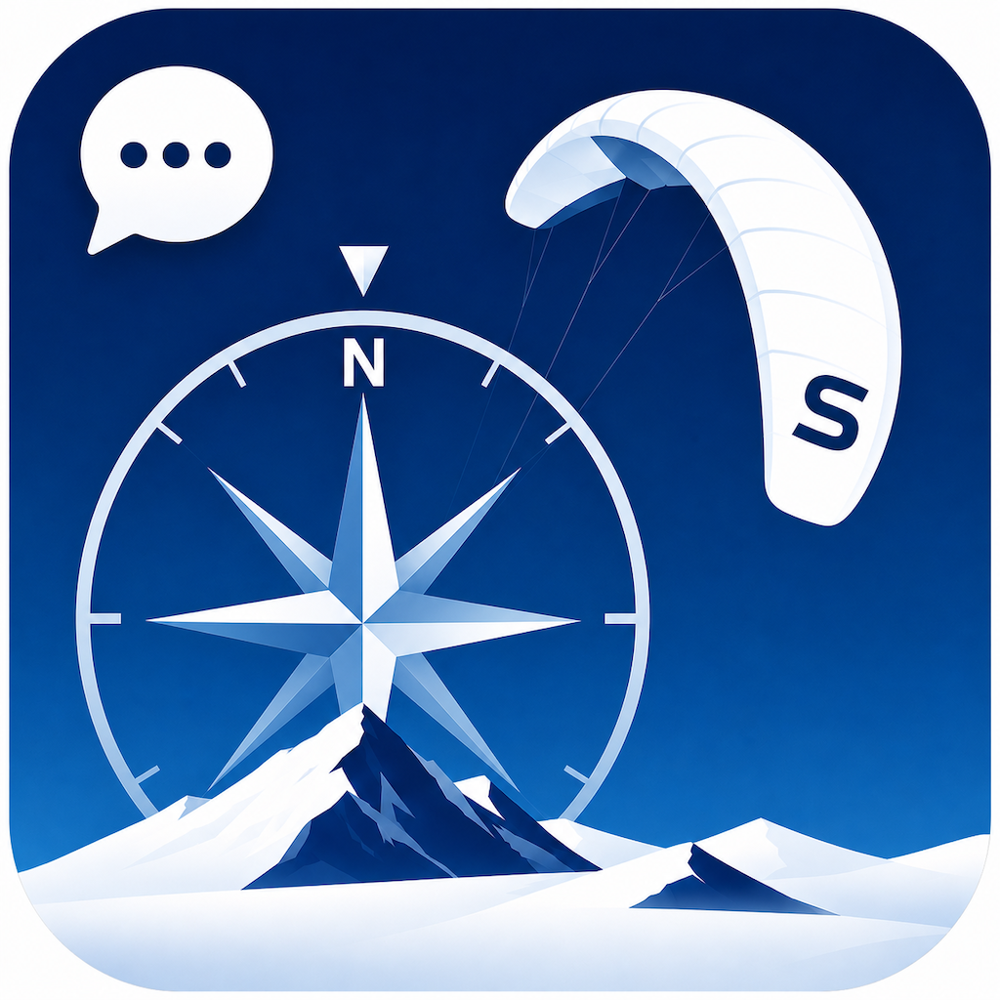
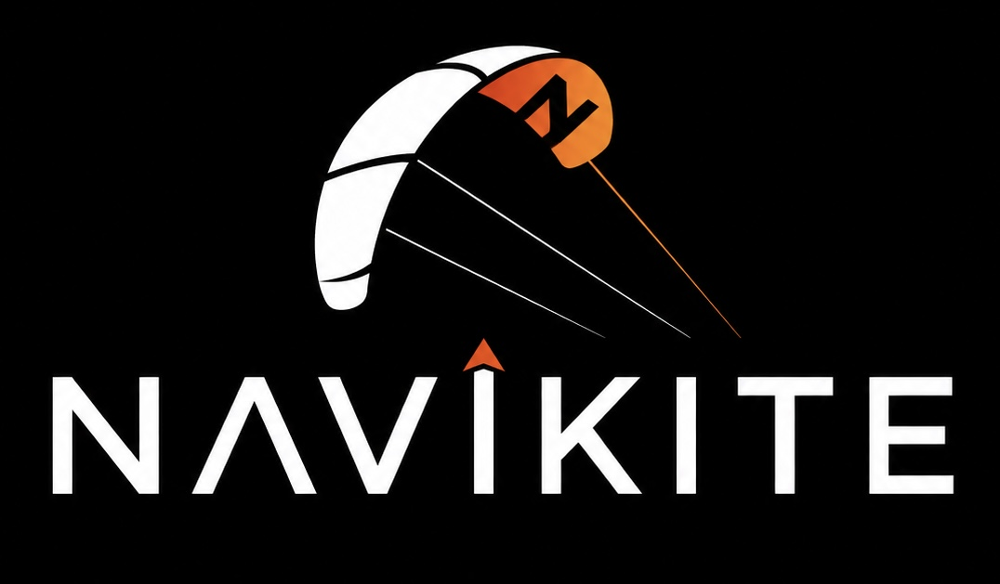

Navigasjon
Velg destinasjon, lagre et sted, returner til base eller følg en GPX-rute veipunkt for veipunkt.

NaviKite
Audio-first navigasjon for snøkiting
Laget for kitere som trenger retning, avstand og ruteoppdateringer uten å stoppe, ta av votter og grave frem telefonen.
Konsept
NaviKite was born from trips on Hardangervidda where the normal navigation tools felt awkward for snowkiting. The idea is simple: a voice in your ear gives you useful updates while you keep moving.
The app points in a straight line toward your destination, route waypoint or base. It does not know whether there is open water, a steep mountain or bad terrain between you and the goal. Map judgement, local knowledge and sound mountain sense still matter.
NaviKite works in English and Norwegian. For Siri commands, use the same language in Siri and the app. You can also choose the Siri voice you prefer in iPhone Settings.
Hovedfunksjoner
Velg destinasjon, lagre et sted, returner til base eller følg en GPX-rute veipunkt for veipunkt.
Når GPS-kursen er stabil, fokuserer NaviKite på høyre/venstre-guiding relativt til fartsretningen.
En forenklet visning hjelper deg å holde retning når visuelle referanser forsvinner.
Turlogger kan summere distanse, tid, fart og høydemeter for enkeltturer, sesonger og total bruk.
Planlegging
PLAN brings together live wind readings, Yr forecast, mountain-road status, webcam stills and a sidewind-based Trip Tips tool.
Apple Watch
The watch companion shows course, distance and navigation state. It is especially useful when the iPhone is in an armband or pocket and you only need a quick glance.
The phone remains the main navigation unit, while the watch mirrors key guidance and can keep important context visible during a session.
Sikkerhet
NaviKite is a navigation aid, not a guarantee of a safe route. Bring map, compass, backup power, weather judgement and the usual mountain safety habits.
FAQ
Nei. Den gir luftlinje-retning og planleggingsstøtte. Bruk en skikkelig kartapp eller papirkart for terrengvurderinger.
Ja. Du kan dele enkeltpunkter eller ruter til NaviKite, og deretter lagre eller navigere til dem.
Ja, men sett Siri til samme språk som NaviKite for best forståelse av kommandoer og readback.
Send konkrete observasjoner: hvor du var, hva du forventet, hva NaviKite sa eller viste, og hva som bør endres.
Last ned gjeldende guide eller send felterfaringer direkte.